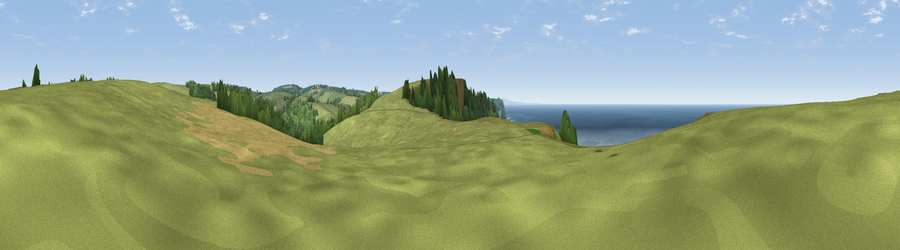

Viewpoint near Welcombe
#2489 in England · top 13% of its area beats it · near Welcombe · path 73 mWhere it is
The exact computed spot (SS 21688 20200). Click the marker for map links.
Public access: the nearest public right of way is about 73 m away — the final stretch may cross private land. Computed from Natural England's CRoW access layer and OpenStreetMap rights of way — not the legal definitive map. Always verify locally.
The view, rendered

A 360° render of this exact spot computed from the terrain model, tree cover and land cover — summer colours, afternoon light, calibrated against photographs of famous viewpoints. Real trees, hedges and buildings will differ in detail.
The panorama
Grey silhouette: terrain skyline in each direction (720 bearings, Earth curvature and refraction included). Dashed green: skyline with trees (+15 m) and buildings (+8 m) as obstacles. Blue strip: how far the ground is visible on each bearing.
Where the view opens
Wedge length = distance to the farthest visible ground on that bearing (vegetation-aware). Rings at 10, 25 and 50 km.
What fills the view
61% water · 28% grassland · 8% woodland · 4% cropland
Angular shares of the visible panorama (visual magnitude), not map area. Landscape diversity 0.43 (0–1 Shannon).
Key numbers
More beautiful places nearby
The staircase of upgrades: each row has a higher view potential than everything closer. Driving times are estimates from straight-line distance, calibrated against real road routing — check an actual route before setting out.
| Place | Direction | Drive | Score |
|---|---|---|---|
| Embury Beacon | S · 1 km | ~2 min | 83.8 |
| Viewpoint near Bucks Mills | ENE · 16 km | ~28 min | 84.0 |
| Viewpoint near Crackington Haven | SSW · 27 km | ~44 min | 88.1 |
| Viewpoint near Combe Martin | NE · 47 km | ~68 min | 88.9 |
| Holdstone Hill | NE · 49 km | ~70 min | 90.2 |
| The Knoll | ESE · 135 km | ~159 min | 91.0 |
50.95357, -4.54010 · source: screening · position refined by local search. Computed location — check access rights before visiting.